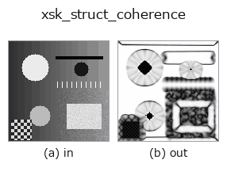

texture op• Datenarten: image → image
• Aufruf: fullseye.apply(img, "xsk_struct_coherence", a=0.5, b=0.5) (das 2-D-Modell ist ein Bild plus zwei skalare Regler a,b∈[0,1])

*Die Abbildung ist die tatsächliche Ausgabe auf einer synthetischen 128×128-Eingabe. Links Eingabe, rechts Ausgabe. Punktwolken als Draufsicht-Streudiagramm (Helligkeit = z), 1-D-Reihen als Linie, Volumen als Maximum-Projektion entlang z, Videos als mittleres Bild, komplexe Bilder als Betrag; Rückgabewerte, die kein Bild ergeben, werden als Werte gezeigt.*
*Die Ausgabe ist in einer viridis-artigen Falschfarbe dargestellt (dunkles Violett = klein, Gelb = groß), damit ein Feld von Größen — Abstand, Phase, Orientierung, Tiefe — lesbar ist.*
Regler a durchfahren (0,1 / 0,5 / 0,9, der andere Regler auf Standard):
▸ xsk_struct_coherence: Regler a durchfahren (Doku-Website)
*Regler b ändert die Ausgabe nicht (gemessen: identisch bei 0,1 / 0,5 / 0,9).*
Auf anderen Bildern (synthetische Szene / Foto / Münzen. Obere Reihe: Eingaben, untere Reihe: deren Ausgaben. Regler auf Standard):
▸ xsk_struct_coherence: andere Eingaben (Doku-Website)
*Die 4. Spalte ist eine Farb-Eingabe (H,W,3). Dieser Op verarbeitet Farbe, ohne Kanäle zu vermischen (er faltet den Farbkanal nicht als dritte Raumachse).*
Kohärenz des Strukturtensors (Konsistenz der Orientierung).
Berechnet mit skimage.feature.structure_tensor die Matrix der 2. Momente des Gradienten und bestimmt aus ihren Eigenwerten l1>=l2 den Wert (l1-l2)/(l1+l2). Je näher der Wert an 1 liegt, desto stärker ist die lokal einseitig gerichtete Struktur (Kanten, linienartige Muster); je näher an 0, desto isotroper (eben oder eckenartig).
a variiert die Glättungsskala sigma des Strukturtensors über 0.5-2.5. b wird nicht verwendet. Dient als Merkmal für die Stärke der Texturrichtung (die Orientierung selbst wird nicht zurückgegeben).
Leeres Bild (gemessen): Ein Bild gleichmäßiger Helligkeit liefert unabhängig von der Helligkeit ein leeres Ergebnis (jedes Pixel ist Hintergrund 0). Reinweiß und Reinschwarz verhalten sich gleich; Helligkeit allein detektiert nichts.
• Leitfaden zur Familie gallery2d_texture_freq
• Katalog der Beispieldaten (Download-URLs / Lizenzen) — 2-D nutzt skimage.data (BSD/Public Domain) plus synthetische Bilder, 3-D nennt Download-URLs echter Datenquellen (Stanford, PDS, …).
• Herkunft und Literatur der Operatoren — die Quellen der Forschung/Verfahren, auf denen diese Operatorfamilie beruht.
• Der kanonische Algorithmus (Autor, Jahr) und seine Anwendungen stehen im Familienleitfaden oben.
Das Programm unten ist nachweislich lauffähig (gleiche Eingabe wie die Abbildung). In der Studio-Hilfe wird dieser Block zu Schaltflächen, die es sofort laden und ausführen.
xsk_struct_coherence 0.50 0.50
▸ Diese Pipeline laden · Laden & ausführen
• gallery2d_texture_freq — py -3.11 examples/gallery2d_texture_freq.py
image als Eingabe)identity · gaussian · mean_box · bilateral · unsharp · median · min_filter · max_filter
texture)std_filter · local_bimodality · local_std · scale_select_std · bootstrap_std_error · structure_tensor_orientation · structure_tensor_coherence · gabor
*Provenance: ops.py — 2D Operator-Registry. Diese Notiz wird von tools/opdocs.py md erzeugt (nicht von Hand bearbeiten).*
© 2026 Kazufumi Furuse — Fullseye operator documentation. Licensed under Apache-2.0.